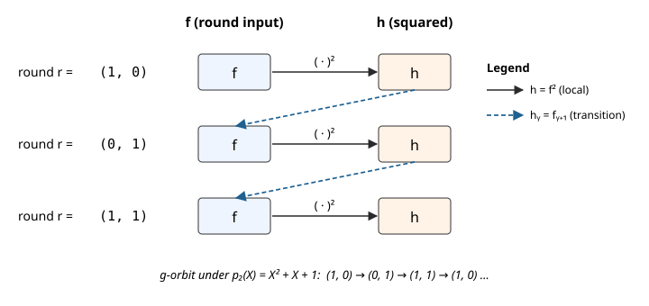

2. Local Rotation PIOP
This note documents the local rotation PIOP implemented in Ceno, used to constrain two consecutive rounds of a round-based computation (e.g. the Keccak-f permutation underlying SHA-3) inside a single GKR layer.
Why this PIOP exists
A round-based computation like Keccak-f passes state from round $r$ into round $r+1$: a proof must enforce this hand-off for every consecutive pair. The straightforward approach — unroll each round into its own row per instance — scales linearly in $T$: $6$ witness polynomials and $6$ zero constraints for the $T = 3$ squaring example below, $48$ and $48$ for Keccak.
The local rotation PIOP avoids that blow-up. Pack all $T$ rounds into multilinear polynomials $f_j(\mathbf{r}, \mathbf{i})$, with $\mathbf{r}$ indexing rounds along the $g$-orbit and $\mathbf{i}$ indexing instances. Then “next round” on indices becomes $\mathbf{r} \mapsto g(\mathbf{r})$, and each hand-off collapses to a single sumcheck-checkable constraint — one commitment per witness, no duplication across rounds.
The local rotation constraint
Given round witnesses $f_1, \ldots, f_w$, write $f_j’(\mathbf{r}, \mathbf{i}) := f_j\bigl(g(\mathbf{r}),, \mathbf{i}\bigr)$ for the “next-round shift” of $f_j$. The local rotation PIOP enforces a per-instance algebraic relation linking adjacent rounds, of the form
$$ 0 = C\bigl(f_1(\mathbf{r}, \mathbf{i}), \ldots, f_w(\mathbf{r}, \mathbf{i}); f_1’(\mathbf{r}, \mathbf{i}), \ldots, f_w’(\mathbf{r}, \mathbf{i})\bigr), \qquad \forall \quad (\mathbf{r}, \mathbf{i}) \in B_m \times B_n \tag{1} $$
where $C$ is a low-degree polynomial expressing the round-transition gate.
Example. Suppose each round takes an input, squares it, and feeds the square into the next round. Let $f(\mathbf{r}, \mathbf{i})$ hold the round-$\mathbf{r}$ input and $h(\mathbf{r}, \mathbf{i})$ the squared intermediate. The round-transition gate is then expressed by two constraints:
$$ 0 = h(\mathbf{r}, \mathbf{i}) - f(\mathbf{r}, \mathbf{i})^2, \qquad 0 = h(\mathbf{r}, \mathbf{i}) - f\bigl(g(\mathbf{r}),\mathbf{i}\bigr). \tag{2} $$
The first is a purely local algebraic relation at round $\mathbf{r}$. The second is the actual hand-off: it says $h$ at round $\mathbf{r}$ equals $f$ at the next round $g(\mathbf{r})$.
Pictorially, take the smallest non-trivial case: $m = 2$ with primitive polynomial $p_2(X) = X^2 + X + 1$. The $g$-orbit has length $2^2 - 1 = 3$ and cycles $(1, 0) \to (0, 1) \to (1, 1) \to (1, 0) \to \cdots$, so $T = 3$ rounds indexed by these three hypercube points. Solid arrows are the local squaring constraint, dashed arrows are the transition from $h$ at round $\mathbf{r}$ to $f$ at round $g(\mathbf{r})$:

Outline
The note is organised in three sections:
- The
nextfunction $g: B_m \to B_m$ — a bijection (permutation) with orbit of length $2^m - 1$ on the nonzero hypercube, borrowed from the HyperPlonk Lookup PIOP [HyperPlonk §3.7]. - Algebraic simplicity of $f \circ g$ — why composing a multilinear polynomial $f$ with $g$ does not blow up its degree, thanks to HyperPlonk’s linearization trick.
- Local rotation PIOP — how the per-round constraint above is enforced by a single selector-gated zerocheck over $B_m \times B_n$, reducing to two rotation-point openings of each $f_j$.
1. The next function $g$
The key move: endow $B_m$ with field structure
As a bare set, the Boolean hypercube $B_m = \{0,1\}^m$ carries no algebraic structure — bit-tuples cannot be “added” or “multiplied”. To define a map $g: B_m \to B_m$ with good properties (bijective, long orbit, low-degree arithmetisation) we first put structure on $B_m$ by identifying it with the finite field $\mathbb{F}_{2^m}$:
$$ \underbrace{B_m}_{\text{bare set}} \cong \underbrace{\mathbb{F}_2^m}_{\mathbb{F}_2\text{-vector space}} \cong \underbrace{\mathbb{F}_2[X]/(p_m)}_{\text{polynomial ring}} \cong \underbrace{\mathbb{F}_{2^m}}_{\text{field}}. $$
Concretely:
- $B_m \leftrightarrow \mathbb{F}_2^m$ (as $\mathbb{F}_2$-vector spaces): interpret a bit-tuple as a vector over $\mathbb{F}_2 = \{0, 1\}$, with bitwise XOR as addition and componentwise scalar multiplication.
- $\mathbb{F}_2^m \leftrightarrow \mathbb{F}_2[X]/(p_m)$ (as $\mathbb{F}_2$-vector spaces): identify $\mathbf{b} = (b_1, \ldots, b_m) \mapsto f_\mathbf{b}(X) := b_1 + b_2 X + \cdots + b_m X^{m-1}$.
- $\mathbb{F}_2[X]/(p_m) \cong \mathbb{F}_{2^m}$ (as fields): the quotient is a field iff $p_m$ is irreducible; when moreover $p_m$ is primitive, the element $X$ is a generator of the cyclic multiplicative group $\mathbb{F}_{2^m}^\times$.
Once this identification is fixed, $B_m$ inherits the full field structure of $\mathbb{F}_{2^m}$ — in particular a multiplication — and we can do arithmetic on hypercube points.
Choosing a primitive polynomial
Fix a primitive polynomial $p_m(X) \in \mathbb{F}_2[X]$ of degree $m$:
$$ p_m(X) = X^m + \sum_{s \in S} X^s + 1, \qquad S \subseteq [m-1]. $$
Recall $p_m$ is primitive iff it is irreducible and $X$ generates $\mathbb{F}_{2^m}^\times$ in the quotient field $\mathbb{F}_2[X]/(p_m)$. Primitive polynomials of every degree exist (e.g. $p_5 = X^5 + X^2 + 1$, $p_6 = X^6 + X + 1$). Under the identification $B_m \leftrightarrow \mathbb{F}_{2^m}$, the origin $0^m \in B_m$ is the field zero, and $B_m \setminus \{0^m\} \leftrightarrow \mathbb{F}_{2^m}^\times$.
Defining $g$ via multiplication by $X$
Take $g: B_m \to B_m$ to be multiplication by $X$ in $\mathbb{F}_{2^m}$:
$$ g(\mathbf{b}) := \text{coeff. vector of } X \cdot f_\mathbf{b}(X) \bmod p_m. $$
By primitivity of $p_m$, $g$ fixes $0^m$ and cycles $B_m \setminus \{0^m\}$ with period $2^m - 1$.
A very simple algebraic formula
The punchline: although we invoked field theory to define $g$, the resulting map has an elementary closed form. Writing $\mathbf{b} = (b_0, b_1, \ldots, b_{m-1})$,
$$ \boxed{g(b_0, b_1, \ldots, b_{m-1}) = (b_{m-1}, b_0’, b_1’,\ldots), \quad b_i’ = \begin{cases} b_i \oplus b_{m-1}, & i \in S, \\ b_i, & i \notin S. \end{cases} } \tag{3} $$
That is: cyclically shift right by one position (so $b_{m-1}$ wraps around to slot $0$), then XOR $b_{m-1}$ into every slot indexed by $S$. The wrap-around XOR is exactly what picking up the reduction $X^m \equiv \sum_{s \in S} X^s + 1 \pmod{p_m}$ contributes. Each output coordinate is thus the XOR of at most two input bits — a structural fact we exploit in Section 2.
2. Algebraic simplicity of $f \circ g$
Having $g$ permute the hypercube is not enough — we need $f \circ g$ to be representable as a low-degree polynomial for sumcheck-based PIOPs.
The obstruction
Although $g$ looks $\mathbb{F}_2$-linear (cyclic shift + XOR), sumcheck does not run over $\mathbb{F}_2$: the prover evaluates polynomials at random points $\mathbf{r}$ in an extension field $\mathbb{F}$, where each $r_i$ is an arbitrary field element. Extended to $\mathbb{F}$, the Boolean XOR has multilinear extension $b \oplus b’ \mapsto b + b’ - 2 b b’$ — quadratic, not linear. Naively substituting $\mathbf{x} \mapsto g(\mathbf{x})$ into a multilinear $f$ therefore yields a polynomial of individual degree up to $2$, and iterating $g$ compounds the blow-up. (This is why the HyperPlonk paper calls $g$ a “quadratic generator”.)
The linearization trick (HyperPlonk, Lemma 3.9)
Instead of forming $f(g(\mathbf{X}))$ symbolically, define
$$ f_{\Delta_m}(X_1, \ldots, X_m) := X_m \cdot f\bigl(\underbrace{1,, X_1’, \ldots, X_{m-1}’}_{\text{rotation point } \mathbf{p}_1}\bigr) + (1 - X_m) \cdot f\bigl(\underbrace{0,, X_1, \ldots, X_{m-1}}_{\text{rotation point } \mathbf{p}_0}\bigr), \tag{4} $$
where $X_i’ := 1 - X_i$ if $i \in S$ and $X_i’ := X_i$ otherwise.
Lemma ([HyperPlonk, Lemma 3.9]). For every polynomial $f$ of individual degree $d$,
$$ f_{\Delta_m}(\mathbf{x}) = f(g(\mathbf{x})) \qquad \forall, \mathbf{x} \in B_m, $$
and $f_{\Delta_m}$ still has individual degree $d$. Moreover $f_{\Delta_m}(\mathbf{r})$ at any field point $\mathbf{r}$ is determined by two evaluations of $f$.
What this buys us. If $f$ is multilinear ($d = 1$), so is $f_{\Delta_m}$. The map $f \mapsto f_{\Delta_m}$ is the algebraic stand-in for $f \circ g$ inside a sumcheck: it preserves individual degree, and the verifier can turn a claim about $f_{\Delta_m}(\mathbf{r})$ into two claims about $f$ at the two rotation points $\mathbf{p}_0, \mathbf{p}_1$ highlighted in (4) — used in Section 3.
3. Local rotation PIOP
Fix $m$ so the number of rounds $T$ fits in one $g$-orbit ($T \leq 2^m - 1$) and let $n$ index $2^n$ instances, so each witness is a multilinear polynomial $f_j: B_m \times B_n \to \mathbb{F}$. Because $g$ fixes $0^m$ and cycles the remaining $2^m - 1$ points, the constraint must be enforced only on the $T$ points of $B_m$ representing real rounds. Introduce a precomputed rotation selector $\mathrm{sel}$ that vanishes off of those $T$ rounds on the $\mathbf{r}$-coordinate. The constraint is checked by a standard zerocheck: the verifier samples a random challenge $(\mathbf{z}_r, \mathbf{z}_i) \in \mathbb{F}^m \times \mathbb{F}^n$ and runs sumcheck on
$$ 0 = \sum_{(\mathbf{r}, \mathbf{i}) \in B_m \times B_n} \mathrm{sel}_{\mathbf{z}_r, \mathbf{z}_i}(\mathbf{r}, \mathbf{i}) \cdot C\bigl(f_1(\mathbf{r}, \mathbf{i}), \ldots, f_w(\mathbf{r}, \mathbf{i}), f_1’(\mathbf{r}, \mathbf{i}), \ldots, f_w’(\mathbf{r}, \mathbf{i})\bigr), \tag{5} $$
where $\mathrm{sel}_{\mathbf{z}_r, \mathbf{z}_i}(\mathbf{r}, \mathbf{i}) := \mathrm{eq}\bigl((\mathbf{z}_r, \mathbf{z}_i), (\mathbf{r}, \mathbf{i})\bigr) \cdot \mathrm{sel}(\mathbf{r}, \mathbf{i})$ is the challenge-parametrised selector.
The sumcheck itself draws fresh random challenges $(\mathbf{s}_r, \mathbf{s}_i) \in \mathbb{F}^m \times \mathbb{F}^n$ round by round and reduces (5) to claimed evaluations of the $f_j$ and $f_j’$ at this post-sumcheck point:
$$ f_j(\mathbf{s}_r, \mathbf{s}_i) \quad \text{and} \quad f_j’(\mathbf{s}_r, \mathbf{s}_i) \qquad j = 1, \ldots, w. $$
The first batch is opened directly against the committed $f_j$. For the second, Section 2 delivers the key reduction: since $f_j’ = f_j \circ g$ (with $g$ acting on the $\mathbf{r}$-coordinate only), the linearization lemma tells us that $f_j’(\mathbf{s}_r, \mathbf{s}_i)$ is determined by evaluating $f_j$ at the two rotation points $\mathbf{p}_0, \mathbf{p}_1$ of (4) — specialised to $\mathbf{X} = \mathbf{s}_r$ — each paired with the same $\mathbf{s}_i$. No separate commitment to $f_j’$ is needed.
In total, the PIOP needs to open each committed witness $f_j$ at exactly three points:
$$ \boxed{(\mathbf{s}_r, \mathbf{s}_i), \qquad (\mathbf{p}_0, \mathbf{s}_i), \qquad (\mathbf{p}_1, \mathbf{s}_i)} \tag{6} $$
— the post-sumcheck point itself, plus the two rotation points induced by $\mathbf{s}_r$ via (4).
References
- Chen, Bünz, Boneh, Zhang. HyperPlonk: Plonk with Linear-Time Prover and High-Degree Custom Gates, §3.7 (Lookup PIOP), Lemma 3.8 (permutation property), and Lemma 3.9 (linearization). 2023. Available at: https://eprint.iacr.org/2022/1355.pdf
- Lidl & Niederreiter, Introduction to Finite Fields and Their Applications, chapters on irreducible and primitive polynomials and the cyclic structure of $\mathbb{F}_{q^n}^\times$.